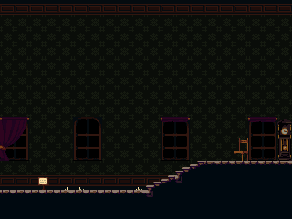
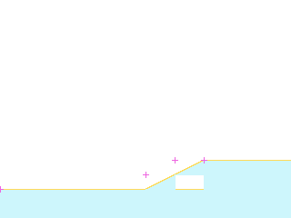
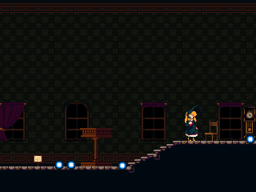

rmChurch03
ROOM_094_S001 · ROOM 94 · rectangle [0, 0, 320, 240]


Статическая реконструкция v4; не native gameplay screenshot. Голубой: маски; жёлтый: опоры; розовый: pivot.
Исходный OBJT sprite_index, кадр 0 — исследовательский кандидат

Не исполнены native Create/Step/Draw, shaders, FSM и динамические spawn paths.
Готовность
Статическая основа: ready. Полная native-сцена: blocked_native_audit. Игровая сборка: не создана.
Переработать только подтверждённые статические визуальные слои под будущую авторскую игру. Сохранить сетку, границы, читаемость опор и места стыков. Новые сюжет, сцены и рисунки ещё не утверждены.
Зависимости
Future art direction and target asset classifier · Native actor/spawner/state/VFX audit before complete scene handoff
Рабочая очередность предложена по связности. Исполнитель: художница; личность, сроки и новые рисунки не назначены.
Depth слои: 4, 3, 2, 0. Опоры и ограничения: точные ROOM transforms и отдельные авторские маски; соседство не переосмыслять.
Входы, выходы и соседи
Входы: E093_01, E095_03
Выходы: E094_00, E094_01
{"section": "ROOM_095_S001", "room": 95, "edge": "E094_00", "kind": "authored_transition", "direction": "right", "conditions": "room-level gate evidence; not evaluated", "source_anomaly": null}
{"section": "ROOM_093_S002", "room": 93, "edge": "E094_01", "kind": "authored_transition", "direction": "left", "conditions": "room-level gate evidence; not evaluated", "source_anomaly": null}
Исходные условия и механизмы комнаты
[
{
"x": 96,
"y": 160,
"object": 25,
"instance_id": 101652,
"creation_code": -1,
"scale_x": 1.0,
"scale_y": 1.0,
"color": 4294967295,
"rotation": 0.0,
"source_room": 94,
"source_object": "SavePoint",
"author_depth": 2,
"derived": false,
"flags": [],
"kind": "rest",
"asset": "INTERACT_507",
"bell_asset": "INTERACT_520",
"bell_offset": [
14,
-17
],
"interaction_radius": 40
}
]Проверенные assetID
Кандидаты и блокеры
SPRT_484, SPRT_507, SPRT_688, SPRT_795
Полные авторские placements ↗ · Native-аудит ↗ · Очередь и возвраты ↗